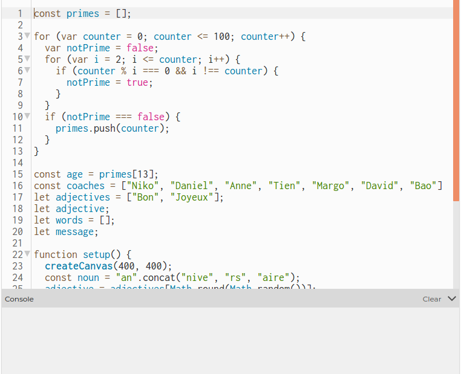
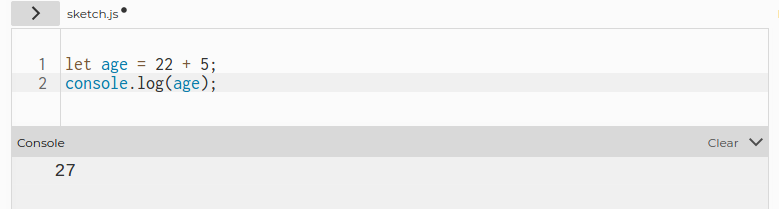
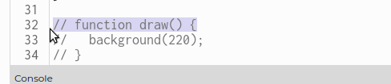

Le but de ce défi est de découvrir le message secret qui se trouve dans un code p5.js un peu loufoque... Tu en profiteras pour découvrir (ou revoir) les variables, les commentaires et les bases de la librairie p5.js
Commencer !Le but de ce défi est de découvrir le message secret qui se trouve dans un code p5.js un peu loufoque... Tu en profiteras pour découvrir (ou revoir) les variables, les commentaires et les bases de la librairie p5.js
Commencer !P5.js est une librairie JavaScript très chouette pour créer des animations et des jeux sur le web. P5.js a un éditeur de texte en ligne que te permet d'écrire ton code, de le tester, de le sauvegarder et de le partager d'un même endroit. Super pratique!
Si ce n'est pas déjà fait, crée-toi un compte sur p5.js:
Clique sur ce lien https://editor.p5js.org/
Ça semble bête à dire... mais n'oublie pas de te connecter à ton compte avant de commencer à travailler! Cela te permettra de sauvegarder gratuitement ton travail (tes sketchs) sur les serveurs de p5.js. Si tu ne le fais pas, tu dois alors télécharger les fichers localement (sur ton ordinateur) et s'il arrive quoique ce soit, tu risques de perdre tout ton travail 😢
Tous les languages de programmation ou presque utilisent des variables. Techniquement parlant, une variable est un symbole qui associe un nom à une valeur.
Plus concrètement, une variable sert à stocker dans la mémoire de l'ordinateur des valeurs pour pouvoir les réutiliser plus tard.
Voici un exemple en JavaScript:
let age = 13;
const name = "Huguette";
var phoneNumber = "+32 495 99 99 99";
Dans cet exemple, on a déclaré trois variables: age, name et phoneNumber. On leur a assigné des valeurs différentes. La valeur de age est le nombre 13, la valeur de name est "Huguette", etc.
Parfois, tu verras qu'on déclare une variable et qu'on lui assigne ou affecte une valeur en deux temps:
let age; // déclaration de la variable age
age = 23; // on assigne la valeur 23 à la variable
Tout ce qui suit les deux barres obliques // ce sont des commentaires. L'ordinateur sait que ce n'est pas du code à exécuter. Les commentaires sont là pour aider les développeurs à expliquer leur code en language humain (en français, en anglais, etc.).
let, const et var sont des mots-clés qui permettent de déclarer une variable en JavaScript. Une fois que la variable a été déclarée, on peut la réutiliser dans le reste du code sans le mot-clé.
Les trois mots-clés créent des variables qui ont des propriétés un peu différentes. On verra cela plus tard.
Finalement, les variables en JavaScript respectent une convention de nommage (naming convention). On ne peut pas écrire n'importe comment les noms de nos variables!
Déjà, le nom des variables est en anglais 🇬🇧 🇺🇸. En fait, tout notre code devrait être en anglais. Même les commentaires... Eh oui, l'anglais c'est la langue de programmation par excellence!
Il existe de chouettes essais pour créer des languages de programmation en d'autres langues que l'anglais, voire même d'autres alphabets que l'alphabet latin. Comme par exemple en arabe.
Note ensuite la syntaxe de la variable phoneNumber. En JavaScript, quand une variable est faite de plusieurs mots, le premier mot est en minuscules, tandis que la première lettre des mots suivants est en majuscule. Cette syntaxe s'appelle lowerCamelCase... car elle rappelle les bosses d'un chameau.
D'autres syntaxes existent. En Ruby, par exemple, on utilise la syntaxe snake_case.  Notre variable s'écrirait alors
Notre variable s'écrirait alors phone_number.
Clique sur ce lien qui te mènera à un projet en p5.js:
Dans ce projet, une développeuse en feu a déclaré plein de variables. Mais à prime abord, il n'est pas évident de deviner la valeur de chacune des variables.
En JavaScript, on peut utiliser une fonction pour inspecter 🔎 les variables: console.log()
Entre les parenthèses du .log(), tu places la variable de ton choix. Par exemple:
let age = 22 + 5;
console.log(age);
La valeur de la variable apparaîtra dans la console, qui se situe au bas de ton code dans l'éditeur p5.js:
Vérifier la valeur de nos variables est ESSENTIEL pour tous les développeurs. Lorsque tu codes, tu devrais constamment faire des console.log()
D'ailleurs, c'est ce que tu vas faire avec le drôle de code du projet "Variables en folie". Mais avant cela, combien y a-t-il de variables déclarées dans ce code? Envoie ta réponse en privée dans le chat de Zoom à un des animateurs du Techies Lab.
Ajoute maintenant l'instruction console.log() autant de fois dans le code que tu veux pour trouver la valeur des variables suivantes:
Pour lancer le programme et voir le résultat de tes console.log(), rien de plus facile: il faut cliquer sur le bouton "Play".

Alors? Quel est le message secret de ce code? Encore une fois, envoie la réponse en privé à un des animateurs du Techies Lab.
Maintenant que tu as découvert le message secret, il est temps de l'afficher! Tu as peut-être noté qu'en bas de notre programme, il y a trois lignes qui sont des commentaires:
// function draw() {
// background(220);
// }
Tu peux enlever les barres obliques une à une pour enlever les commentaires de chaque ligne.
Ou tu peux le faire avec des raccourcis clavier, comme les pros:
Le raccourci pour sélectionner plusieurs lignes de code : ctrl + l
Le raccourci pour commenter (ou décommenter): ctrl + /
Note que notre canevas (l'espace Preview) est devenu gris pâle et a la forme d'un carré.
Comment faire pour y ajouter du texte ? Quelle instruction donner à l'ordinateur? Il existe une sorte de dictionnaire de toutes les instructions qui existent dans la librairie P5.js. Ce dictionnaire se trouve à la page https://p5js.org/reference/
En allant vers le bas de la page, tu verras une section Typography
Clique sur l'instruction text(). La page est pas mal longue... et en anglais! Malheureusement, presque tout est en anglais quand il s'agit de code. Alors il vaut mieux s'habituer tout de suite, quite à utiliser un dictionnaire!
Les plages d'explications commencent toujours avec un exemple, ce qui est super utile pour comprendre comment fonctionne une instruction. Le premier exemple commence avec les lignes suivante:
textSize(32);
text('word', 10, 30);
On va les copier et les coller dans la fonction draw() de notre code.
Maintenant, au lieu du mot 'word', affiche le message secret!